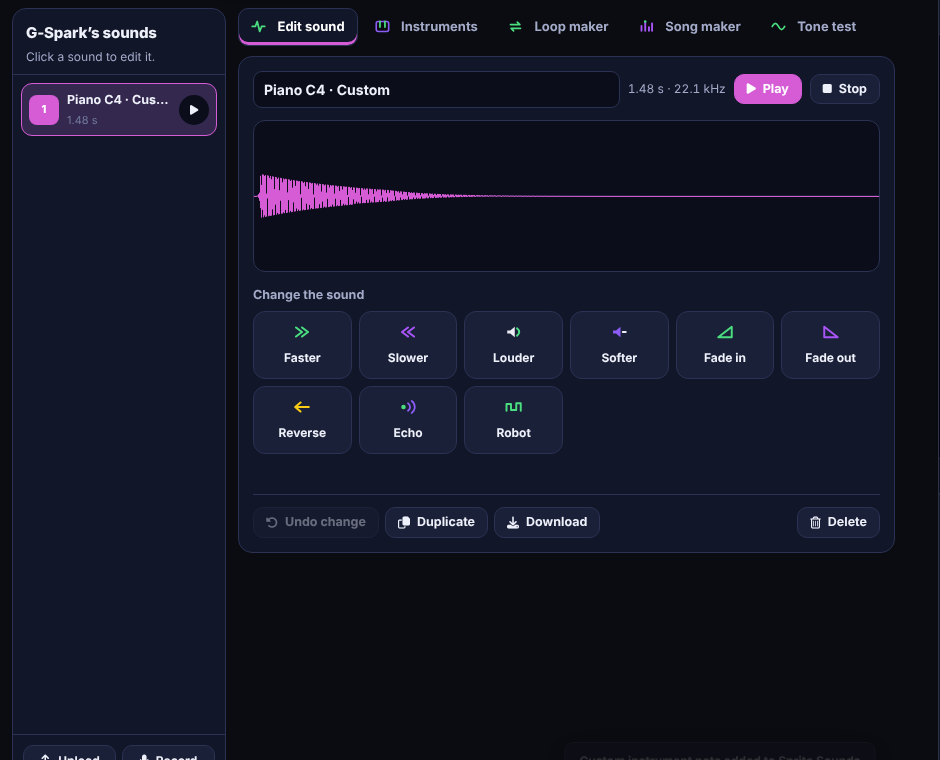
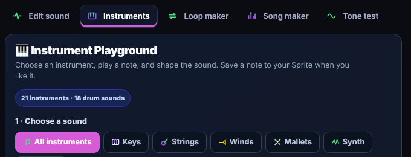
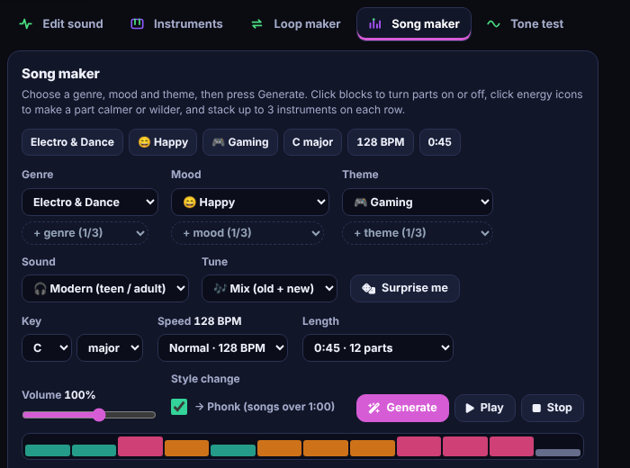

Sounds and Song maker
Historical interface reference (v15.49.0): the style names and screenshots further down this page come from an earlier build. Later AI-team notes record newer Song Maker modes and a Create Melody area; Cloud must confirm the exact current labels and save behavior before these older captures are treated as current.
The Sounds area includes sound editing and music-making tools. The Song maker can generate a song from choices such as genre, mood and theme; the loop maker and instruments offer more direct control.
Basic workflow
- Select a sprite and open Sounds.
- Import or record a sound if that control is available, or choose an existing sound.
- Preview before using it in a script.
- Use Sound blocks to start/stop playback and adjust available settings.
- For music, open Song maker or the loop/instrument tools, preview the result and save the project.
Create Melody and Song Maker
Later development notes place a Create Melody area under Sounds → Instruments. Use the current on-screen controls to compose a short phrase, choose an instrument, preview it, and save the result to the selected sprite's sound assets when the save action is available. The exact melody-entry controls and labels must be checked in the running build; this guide does not invent a keyboard or grid layout.
- Select the sprite that should own the sound, then open Sounds.
- Open Instruments and look for Create Melody. If the area is not present, record the app version and stop rather than following an old screenshot.
- Build a short phrase using the controls shown in the current interface. Preview it and adjust notes or timing before saving.
- Choose an instrument or sound where the editor offers that choice. Compare the result at a comfortable volume.
- Save the result as a sound asset if the current build provides that action. Return to Code and test it with a Sound block.
- Save the project, reopen it and play the asset again to confirm it persisted.
Song Maker development notes list four modes—Tune Mix, Classic, Fresh and My melody—in a later update. If those choices appear, select one, use the visible genre/mood/theme or sound/tune/key/speed/length controls that belong to that mode, preview the result, and save it. Do not assume all modes expose identical settings.
Current evidence limit: the page's embedded Instrument and Song Maker screenshots are historical captures. Sticky GW-DOC-MUSIC-05 asks Cloud to capture current instrument, Create Melody, Song Maker modes, playback and save behavior before replacing them.
What it looks like



Audio features and generated content may differ from Scratch. Keep a project copy before major sound edits and test playback after reopening the file.